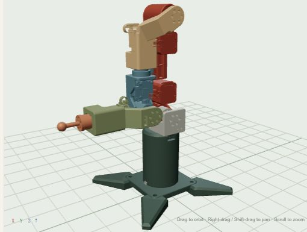

AARON / PERSONAL PORTFOLIO
Making ideas
move.
Exploring the space between mechanical design, embedded software, and the models that bring them together.
A collection of projects, experiments, and things in progress.
LIVE 3D MODELZERO ARM / 6 DOF

Drag to rotate · Scroll to zoom · Your real ZERO ARM model
Open the six-axis explorerDESIGN / CODE / EXPLORATIONSCROLL TO EXPLORE ↓
01 / SELECTED WORK
From concept to components.
A closer look at what I'm building, and how it fits together.
Read the build notes ↓
ZERO ARM / BUILD NOTE 001
Getting the frames to agree.
A connected CAD assembly is only the beginning. Its meshes and joint frames have to agree before it can move as one robot.
This project brings the mechanical assembly into seven rigid links, with joint-local meshes and a six-axis URDF description. The browser lets you inspect those connections directly.
- 6
- degrees of freedom
- 7
- rigid links
- Z
- up axis
INSIDE THE PROJECT
01
Mechanical design
STEP assemblies, printable parts, and assembly references.
02
Embedded software
STM32F103, HAL, and FreeRTOS project structure.
03
Robot models
D-H parameters and a six-axis URDF description.
Project notes & current status
The browser model and a MATLAB zero-pose import have been checked. Full motion validation, firmware builds, and hardware operation remain work in progress.
Read the project notes ↗More projects will join this collection as they develop.
02 / A LITTLE ABOUT ME
Curiosity is
the starting point.
Hi, I'm Aaron.
I enjoy exploring how things work across mechanical design and software. This site is a place to share the projects I'm working on, the ideas behind them, and what I'm learning along the way.
Right now, that includes bringing together CAD, embedded firmware, and robot descriptions in a robotic arm project.
Find me on GitHub03 / CURRICULUM VITAE
The next chapter.
My CV is taking shape. Education, experience, and a downloadable PDF will be added here when it's ready.
CV IN PREPARATIONA work in progress.
KEEP EXPLORING
See what's next.